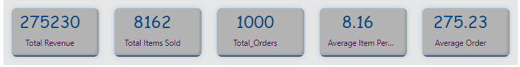
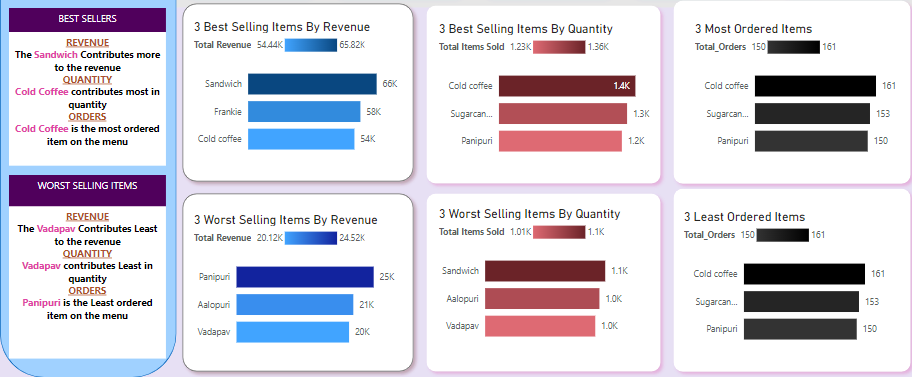
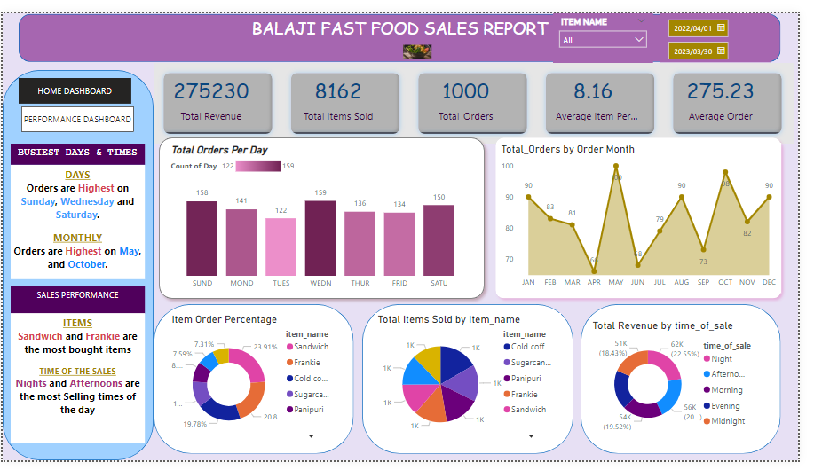

BALAJI FAST FOOD SALES Data Analysis Report
This report presents an analysis of sales data for Balaji Fast food Restaurant in year 2019 using PowerBI. The analysis aims to provide insights into key trends, performance metrics, and areas for improvement. By examining sales data, we can identify patterns, customer preferences, and opportunities for optimizing revenue generation.
Who is Balaji restaurant?
Balaji fast food is a small dining establishment located in Bangladash. It offers a diverse menu of fast food cuisine, catering mostly local residents and visitors. This report delves into the sales data for the year 2019 to evaluate the restaurant's performance and make informed decisions for future strategies.
Methodology
The analysis is based on sales data extracted from the restaurant's point-of-sale (POS) system. The data includes daily sales figures, menu item popularity, and any relevant promotions or events during the period under review. Statistical tools and visualization techniques are utilized to interpret the data effectively.
Key Findings
Overall Sales Performance:
Total revenue of Balaji Fast Food for the whole year amounted to $275230 with 8162 total items that were sold in a space of a year. The business was able to receive 1000 orders with diferrent items on the menu
Sales by Day of the Week

Tuesdays and Fridays consistently recorded lower sales figures, indicating potential opportunities for targeted promotions or menu specials to boost this two days' traffic.
Menu Item Analysis:
Top-selling menu items include Sandwich which contributes about 23%($66k) of the total revenue and frankie contributing with around 21%$58k of the total revenue, and most ordered items are cold coffe and sugercane juice. This suggests a high demand for these items, and optimizing their production and promotion can enhance overall profitability. According to the analysis the Vedapav and Aalopuri are not producity a lot of profit for the business which means marketing should concentrate more on these two items in order to make a profit from them as well.
Monthly Trends:

In terms of monthly sales the restaurent sells more in January, May and October, whereas its worst selling months are April, June and September.
Recommendations
- The restaurant must introduce weekday specials or promotions to attract customers during slower periods, particularly on Tuesdays and Fridays.
- The restaurant must conduct a thorough cost analysis to identify high-margin menu items and prioritize their promotion.
- The restaurant must explore opportunities for online ordering and delivery services to tap into the growing demand for convenience.
- Collaborate with local events or organizations to increase brand visibility and attract new customers.
Conclusion:

In conclusion, the analysis of sales data provides valuable insights into Balaji Fast Food restaurant's performance and areas for enhancement by leveraging these findings, the restaurant can formulate strategic initiatives to drive revenue growth, enhance customer satisfaction, and maintain a competitive edge in the market.